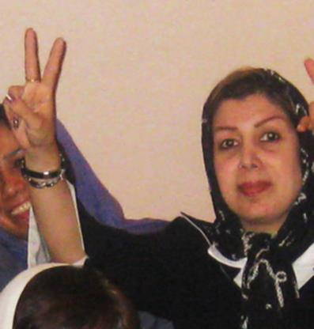
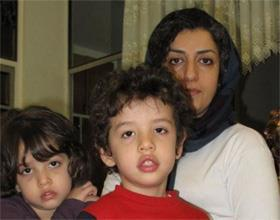

|
|
رزا قراچورلو به خاک سپرده شد؛ نرگس محمدی به مرخصی آمد
سه شنبه10 مرداد 1391
تغییر برای برابری: رزاقراچورلو، وکیل، استاد دانشگاه و فعال حقوق زنان امروز صبح پس از تشییع از دانشکدهی حقوق دانشگاه آزاد، به خاک سپرده شد. در این مراسم همکاران وی، برخی فعالان جنبش زنان و دانشجویانش حضور داشتند. قراچورلو پس از مدتی بستری شدن در بیمارستان روز هشتم تیرماه و بر اثر بیماری سرطان درگذشت.به گفتهی برخی از شرکت کنندگان در این مراسم اجازه داده نشد تا در مورد فعالیتهای او در حوزهی زنان و کودکان صحبتی شود.

او یکی از مدافعان حقوق برابر برای زنان و مردان و از حامیان کمپین یک میلیون امضا بود، او در مصاحبهای که آذرماه هشتاد و پنج با سایت تغییر برای برابری داشت در ارتباط با کمپین گفت: «البته خیلی ها هم می ترسند که این بیانیه را امضا کنند و نگران هستند. و فکر می کنند برای خود و یا شغلشان مشکل ایجاد می شود. در صورتیکه، به قول شاعر، "گر مرد رهی میان خون باید رفت، از پای فتاده سرنگون باید رفت، تو پای به راه در نه و هیچ مپرس، خود راه بگویدت که چون باید رفت." به اعتقاد من نه تنها در مورد این طرح بلکه در همه موارد دیگر، مهم حتما این نیست که نتیجه نهایی آن چیزی باشد که ما انتظار داریم، مهم راهی ست که می رویم، تلاشی ست که در پیش می گیریم.» [1]
قراچورلو، در آبان ماه 89 و به هنگام بازگشت از ترکیه به اتهام اقدام علیه امنیت ملی دستگیر و پس از چند روز با وثیقهی بیست میلیون تومانی آزاد شد. تغییر برای برابری درگذشت قراچورلو را تسلیت گفته و یادش را گرامی میدارد.
نرگس محمدی، با تودیع وثیقهی 600 میلیون تومانی به مرخصی آمد
پس از بهاره هدایت که روز یکشنبه و به شکلی غیرمنتظره به مرخصی آمد، امروز نرگس محمدی نیز پس از تودیع وثیقهی 600 میلیون تومانی به مرخصی آمد. محمدی سخنگوی کانون مدافعان حقوق بشر، در خرداد سال 89 بازداشت و به مدت 20 روز در بند 209 زندان اوین به سر برد، وی به دنبال ابتلا به بیماری " فلج عضلانی" از زندان آزاد و در بیمارستان تحت مداوا قرار گرفت. این فعال حقوق بشر سپس از سوی دادگاه انقلاب به تحمل 11 سال حبس تعزیری محکوم شد. که این حکم در دادگاه تجدیدنظر به شش سال حبس کاهش یافت.

این مرخصی در حالی به نرگس محمدی تعلق یافته است که او مدتی پیش به مدت چند روز در بیمارستان بستری بود و خانواده و دوستانش هیچ اطلاعی از وضعیت جسمی او نداشتند.
نرگس محمدی دو فرزند دوقلو به نامهای علی و کیانا دارد که پس از خروج همسرش از ایران مسئولیت نگهداری از آنها به عهدهی اوست.